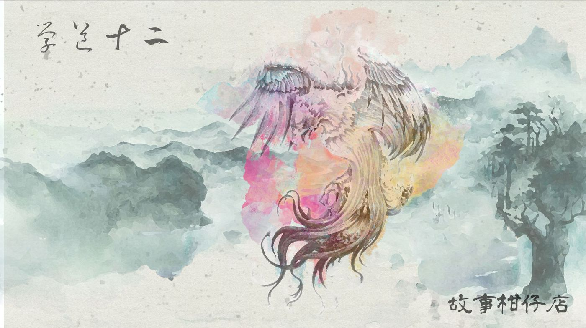
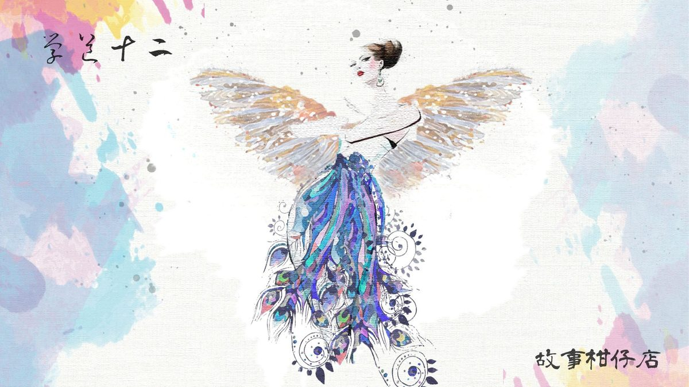

玄墨行者．學道（十二）：婆娑鳥

☯一章 學道（十二）婆娑鳥☯
「成年禮都對付這麼簡單的妖怪啊？也太放水了吧？」拾兒掏出師父出借的「醉妖弦」，按下木柄按鈕，瞬間伸展為手臂長的弦琴。
那三個調皮搗蛋的妖物還沒發現拾兒，仍不斷往屋簷丟著石頭，再被自己的惡作劇逗得尖笑不止。其中一個還跑到草叢裡，翻揀了一塊磚頭，雙手丟啊捧的，躍躍欲試。
「丟磚頭？這還得了。」拾兒蹲下馬步，將右腿翹在左膝上，弦琴就這樣安穩放妥了。他深吸口氣，扭動脖頸，舒展一下指頭，隨即撥弄起六條粗細不一的琴弦。
這是他第一次使用醉妖弦，琴弦勾入指尖的觸感很奇特，滾燙的，像被火燒得通紅的鐵絲。
拾兒手指翻飛如落在荷葉又彈起的雨滴，柔和樂音悠悠揚揚，當然也傳入了光頭小妖的尖耳裡。本來要擲磚頭的小妖，搔搔頭，將磚頭放下了，還拍拍同伴的手，像是在制止他們繼續扔石頭。
其他兩個同伴聽了溫柔弦聲，迷迷糊糊的，點點頭，一起往拾兒這裡走來。
這未免太簡單啦！拾兒在心裡歡呼，暗自讚嘆醉妖弦之高深莫測。師父曾說，這弦的來頭不小，是取「麒麟颶」的觸鬚磨捻而成，不必見血，也能和平收服妖物。
三個齊頭高的小妖手牽手站在面前，很享受似的跟著弦樂搖頭晃腦。就差最後一步了。只要讓他們再靠近點，便能將他們收進弦琴音箱，任務就大功告成。
「噹！」怎知愈謹慎，手指便出了錯，誤勾了最粗的那根弦，憑空迸出殺意濃重的低音。小妖像瞬間被敲醒，與拾兒面面相覷了三秒，嘰嘰呱呱尖叫起來，拾兒一慌，樂音荒腔走板成古怪呻吟。
小妖們同時轉身，連奔帶跳跑了，拾兒慌忙收起弦琴，邁開步子追了上去。小妖倒是聰明，一路往山林跑，就算拾兒在山裡野慣了，也很難在參天樹叢中順利追捕，尤其小妖滑頭得很，一進山林便兵分三路，搞得拾兒分身乏術，只得先選中一個繼續追。
偏偏天色又暗了下來，那小妖卻毫無阻撓，矮小身影在葉落林木間閃爍，時而跑遠，時而拉近。正當拾兒即將失去耐心之時，天邊忽然傳來如湧動雲霧般的歌聲。那聲響像能鑽石縫，掩天地，搖動滿山滿谷的土坡與樹根。
隨著那奇異歌聲，一片黑壓壓影子遮住了林間光線。抬頭一望，竟是一隻巨大無比的婆娑鳥。祂腳爪立於近直角的土坡上，張開五彩羽翅，張開的嘴喙傳出陣陣奇異歌聲，就連小妖也怔在祂腳邊，動彈不得。
拾兒也愣住了。他沒想過居然能見到婆娑鳥，那可是個大咖啊！動念一想，如果收了祂，豈不更讓師父刮目相看？再度紮穩馬步，掏出琴來，不料才撥響第一聲，滿天滿地都沒了光。
婆娑鳥歌聲時而高昂，時而低迴，各種鳥類從四面八方蜂擁而至，嘴裡叼著昆蟲魚蝦前來進貢，有一隻比馬還大的妖鳥，俯衝而下一舉勾起小妖的耳朵，送到婆娑鳥面前。
拾兒弦聲響徹了整座山林，婆娑鳥突然拍打五彩羽翅，唱出動容天地的絕世樂聲。剎那間，在場的禽鳥全轉過頭來瞪著拾兒。
「幹嘛？彈琴犯法啊？」拾兒嘴裡逞強，雙腳倒是一步步後退，然而那些目露凶光的鳥竟全數鼓起翅膀，朝他衝撞而來。
拾兒不甘示弱，拇指一撥，柔和樂音忽而肅殺，挾風帶雨襲捲山林，落葉枯枝狂掃而起，戳進鳥禽眼珠、翅股，哀啼如織，落羽紛飛；躲過攻擊的，嘴喙、腳爪、羽翅，全是致命武器，拾兒感覺滿頭滿臉都被利刃劃過似的，刺痛著神經，耳邊依然是美妙絕倫的婆娑鳥歌聲。
一秒空檔，所有的攻擊都還來不及落下瞬間，拾兒翻跳起身，還未端正弦琴，卻見所有禽鳥皆收束翅膀，定定站著。鳥群間，走出一個渾身披覆五彩羽毛的女人，眼光瑩潤，髮絲細柔透光。是個非常美麗的女人，然而撐著婀娜軀體的，竟是一對細瘦鳥爪。
拾兒看得出了神，女人卻伸出乾皺腳爪抵住他的臉，另一爪則踩住醉妖弦，溫言軟語：「你們玄墨一族也太超過了，收妖就收妖，怎麼能傷及無辜？簡直沒把我婆娑鳥放在眼裡。」
腳爪尖銳指甲牢牢陷進拾兒臉龐，混著一股揉雜了泥土與天際的氣味，臉上分點的劇痛倏地緊縮，像數條鐵柱貫穿了皮肉顱骨。他一個踉蹌踩空，抱著頭滾下山坡撞上石頭。昏過去之前，他根本不敢想，自己的臉傷成什麼模樣。
－－－－－
#新連載依舊兩天一篇每晚準時六點半喔
#請人客多多指教
#記得去各大書店買我們的書故事柑仔店哩

